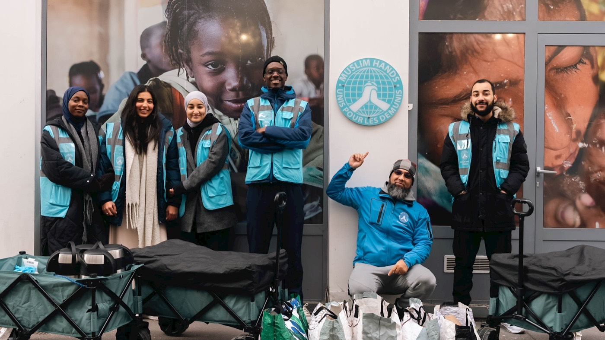
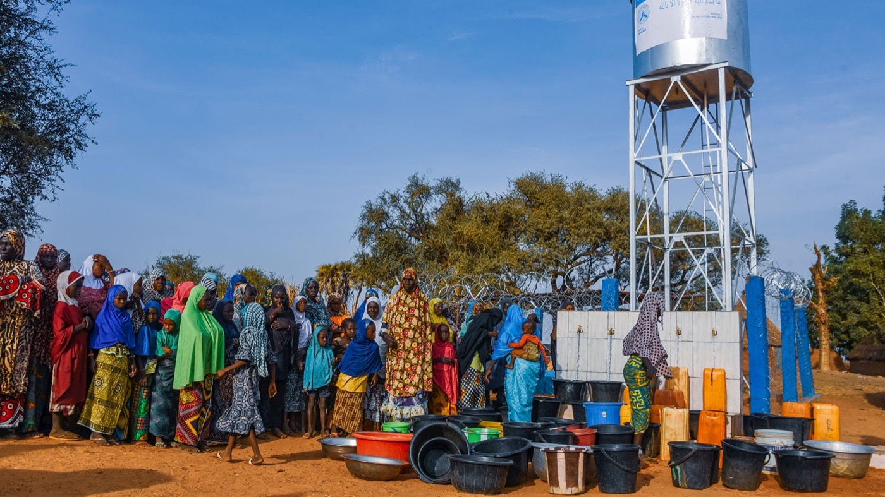
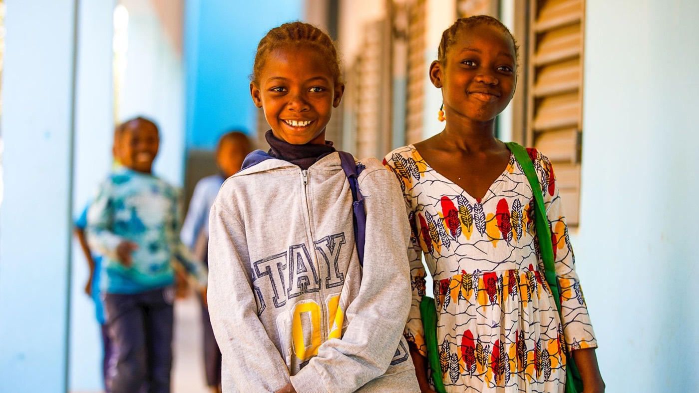
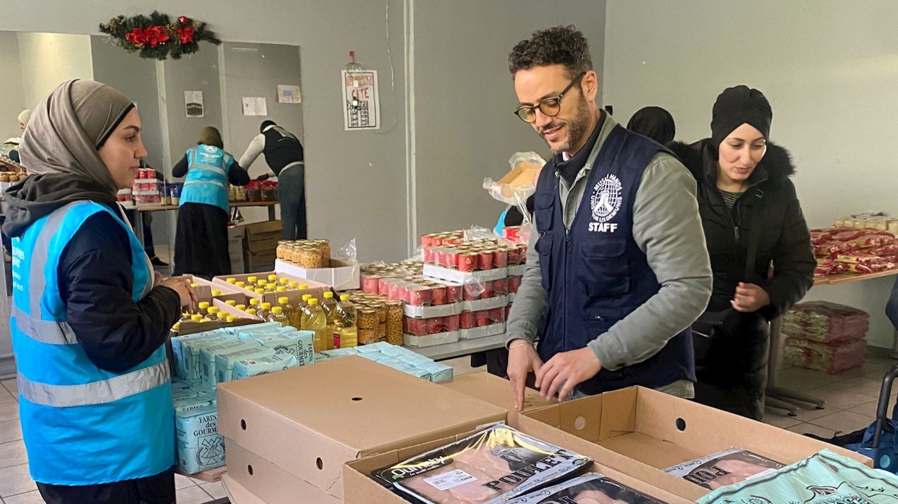

- Comptes certifiés chaque année par un commissaire aux comptes indépendant
- Rapport annuel public depuis 2019, chiffres actualisés sur cette même page
- Fonds zakat séparé, tracé et distribué à 100 % aux ayants droit
Comment sont utilisés 100 € donnés à Muslim Hands ?
Sur 100 € reçus en 2024, 80 € ont financé directement nos missions sociales, 12 € la recherche de fonds (campagnes, site, événements) et 8 € le fonctionnement de l'association (locaux, salaires administratifs, audit). Le tableau ci-dessous reprend la répartition du rapport annuel 2024 ; il sera actualisé chaque année sur cette même page, jamais sur une nouvelle adresse.
| Emploi des ressources 2024 | Part | Ce que cela recouvre |
|---|---|---|
| Missions sociales à l'international | 66 % | Eau potable, parrainage d'orphelins, éducation, santé, sécurité alimentaire, urgences dans 18 pays |
| Missions sociales en France | 14 % | Maraudes, colis d'hiver, La Fourchette Fraternelle à Marseille, mineurs non accompagnés, iftars solidaires |
| Frais de recherche de fonds | 12 % | Campagnes, site internet, événements, reçus fiscaux, service donateurs |
| Frais de fonctionnement | 8 % | Locaux de Saint-Ouen, salaires administratifs, commissaire aux comptes, assurances |
| Total | 100 % | Soit 80 % de missions sociales, 20 % de frais de collecte et de fonctionnement |
Source : rapport annuel 2024 et comptes certifiés. Les frais de collecte comprennent l'édition des reçus fiscaux et le service donateurs.
Donner en confiance
100 € vous coûtent 34 € après réduction d'impôt de 66 %.
Faire un don80 % en missions sociales · reçu fiscal immédiat · comptes certifiés
Pourquoi des frais de collecte et de fonctionnement ?
Une association sans frais n'existe pas. Il faut payer les locaux, le commissaire aux comptes, le logiciel qui émet vos reçus fiscaux, les salariés qui suivent les projets et répondent à vos questions. La question utile n'est pas « y a-t-il des frais ? » mais « sont-ils raisonnables et contrôlés ? ». Avec 20 % de frais au total, Muslim Hands France se situe dans la fourchette observée chez les grandes associations françaises de solidarité internationale, et chaque poste est détaillé dans le compte d'emploi des ressources.

Ce que vos dons ont permis en 2024
Derrière les pourcentages, des résultats concrets. Voici les principaux chiffres de l'année 2024, extraits du rapport annuel.

Comment choisissons-nous et suivons-nous les projets ?
Identification
Nos bureaux locaux et partenaires remontent les besoins : village sans eau, école sans toit, famille sans ressources.
Validation
Le comité programmes de Paris vérifie le budget, le partenaire, la durabilité et l'éligibilité à la zakat si besoin.
Réalisation et suivi
Chaque projet est photographié, géolocalisé et visité. Les puits sont revus chaque année par un comité villageois formé.
Bilan public
Chaque campagne d'urgence se termine par un bilan chiffré, publié dans nos actualités.
La zakat : un fonds à part
Votre zakat ne se mélange jamais aux autres dons. Elle est enregistrée dans un fonds séparé et distribuée uniquement aux huit catégories d'ayants droit définies par le Coran (sourate 9, verset 60) : orphelins, familles sans ressources, victimes de crises. Les savants admettent que la catégorie « ceux qui la collectent » couvre les frais de collecte et de distribution ; chez Muslim Hands, ces frais sont plafonnés et publiés chaque année. Depuis 2007, plus de 15 millions d'euros de zakat ont été distribués. Où va votre zakat, en détail.

Rapports annuels et comptes certifiés
Tous nos rapports sont publics. Les comptes sont arrêtés par le conseil d'administration, certifiés par le commissaire aux comptes, approuvés par l'assemblée générale, puis publiés au Journal officiel des associations.
| Exercice | Documents | Publication |
|---|---|---|
| 2025 | Rapport annuel 2025 et comptes certifiés | à paraître (juin 2027) |
| 2024 | Rapport annuel 2024 (PDF, 14 Mo) · comptes certifiés et rapport du commissaire aux comptes (Journal officiel) | juin 2025 |
| 2023 | Rapport d'activité 2023 (PDF, 2 Mo) · comptes certifiés (Journal officiel) | juin 2024 |
| 2019 à 2022 | Rapports d'activité 2022 · 2021 · 2020 · 2019 (PDF) | archives |
| Charte | Charte eau et assainissement · charte de déontologie France Générosités | permanent |
À brancher par l'équipe : les liens pointent vers les PDF du site actuel (rapports 2019 à 2025). Garder une URL stable par exercice.
Qui contrôle Muslim Hands France ?
Commissaire aux comptes
Certification annuelle indépendante des comptes, rapport publié au Journal officiel.
France Générosités
Membre du syndicat des associations faisant appel à la générosité du public ; charte de déontologie appliquée.
Don en Confiance
Démarche de labellisation engagée en 2026 : contrôle continu de la gestion, de la communication et de la gouvernance.
Assemblée générale
Conseil d'administration bénévole élu, comptes approuvés chaque année par les membres.
L'association est également soumise aux contrôles de droit commun des organismes faisant appel public à la générosité : déclaration préalable en préfecture et compte d'emploi annuel des ressources collectées auprès du public.
Ce que disent nos donateurs
Vous cherchez « Muslim Hands avis » ? La meilleure réponse vient de ceux qui donnent et de ceux qui reçoivent. Les avis des donateurs sont publiés sur notre fiche Google et sur Trustpilot ; nous y répondons à chacun. Et pour chaque puits ou parrainage, vous recevez des photos et un bilan nominatif.

« J'ai financé un puits au nom de mon père. Trois mois plus tard, j'avais les photos, les coordonnées GPS et le nom du village. C'est la première fois qu'une association me montre aussi précisément ce qu'est devenu mon don. »Nadia, donatrice depuis 2021, Lyon
Questions fréquentes sur l'utilisation des dons
Quelle part de mon don arrive sur le terrain ?
En 2024, 80 % des ressources ont financé les missions sociales : 66 % à l'international et 14 % en France. 12 % ont servi à la recherche de fonds et 8 % au fonctionnement.
Quels sont les frais sur la zakat ?
La zakat est tracée dans un fonds séparé. Les frais de gestion sont plafonnés et publiés chaque année dans le rapport annuel ; le reste est intégralement remis aux ayants droit.
Les comptes sont-ils certifiés ?
Oui, chaque année, par un commissaire aux comptes indépendant. Comptes et rapport sont publiés au Journal officiel et téléchargeables ci-dessus.
Avez-vous un label ?
Membre de France Générosités, dont nous appliquons la charte de déontologie ; démarche de labellisation Don en Confiance engagée en 2026.
Puis-je savoir ce qu'est devenu mon don ?
Oui. Pour un puits ou un parrainage, vous recevez des photos et un bilan nominatif. Pour une urgence, chaque campagne se termine par un bilan public chiffré.
Vos dons en France, à 75 % de réduction d'impôt
Les 14 % consacrés aux missions sociales en France financent les maraudes, les colis d'hiver, La Fourchette Fraternelle à Marseille et l'accompagnement de 175 mineurs non accompagnés.
Ces actions d'aide alimentaire et d'hébergement relèvent du dispositif « Coluche » : votre don est déductible à 75 % jusqu'à 2 000 € par an, puis à 66 % au-delà. Comprendre la réduction d'impôt


Chaque euro, tracé jusqu'au village.